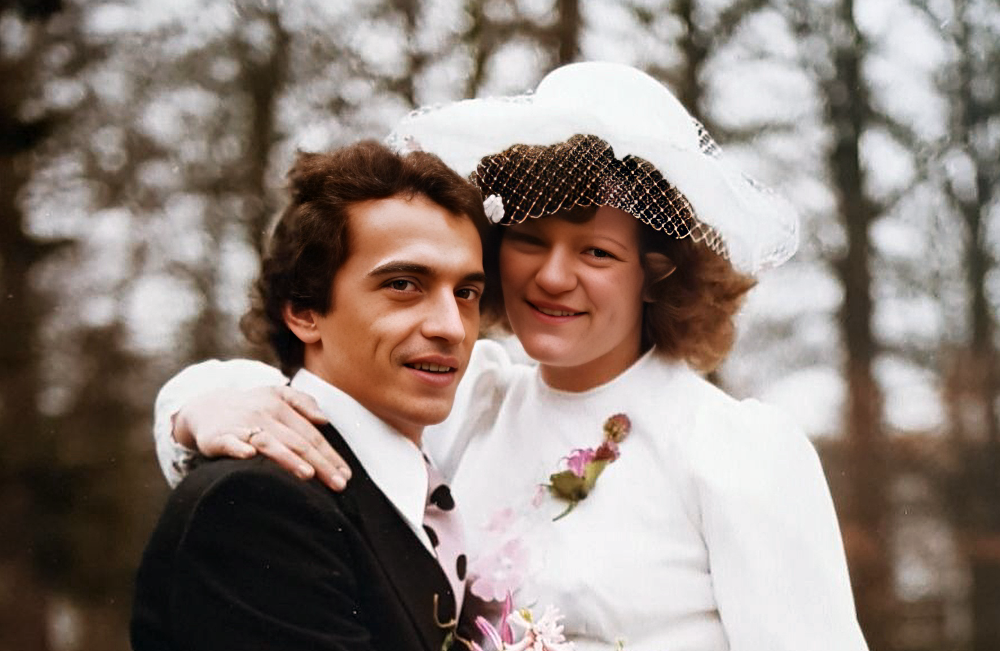
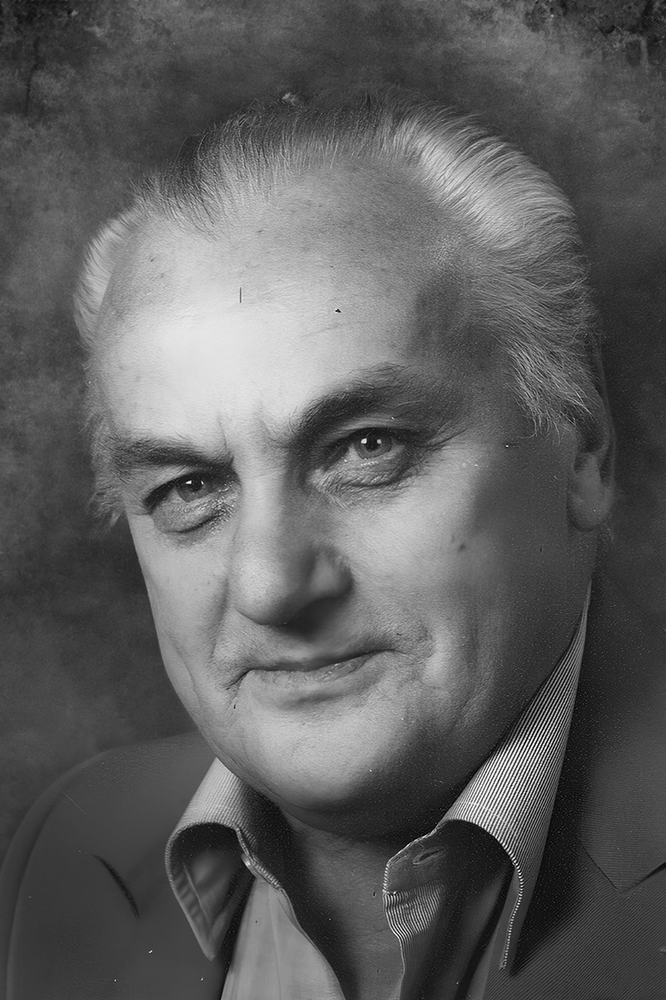
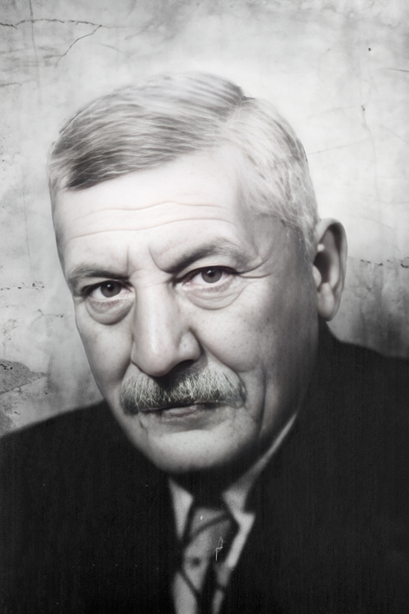
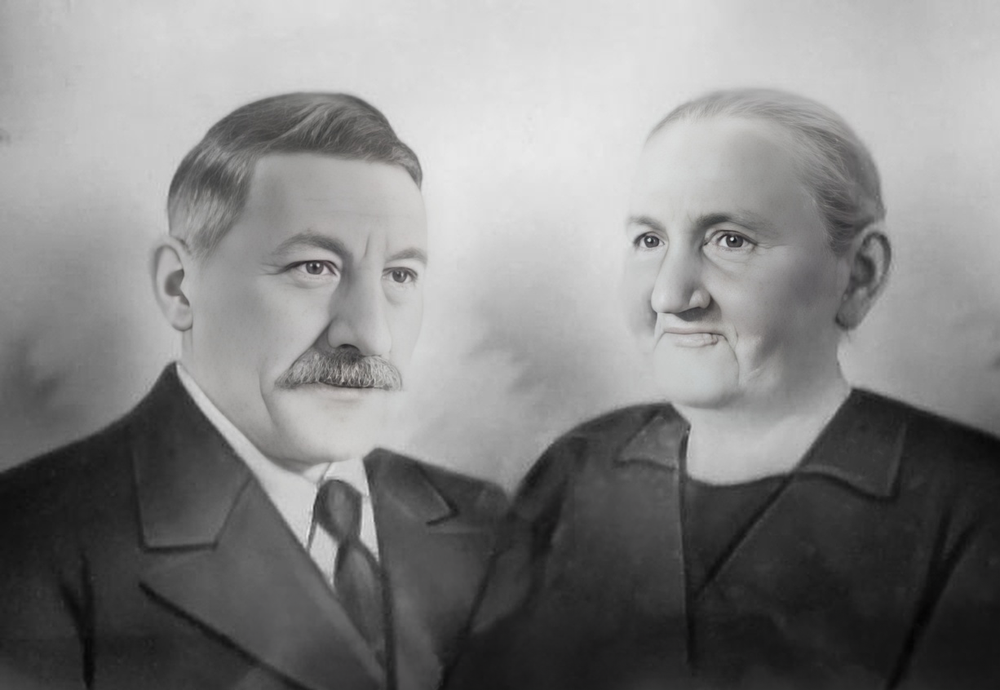
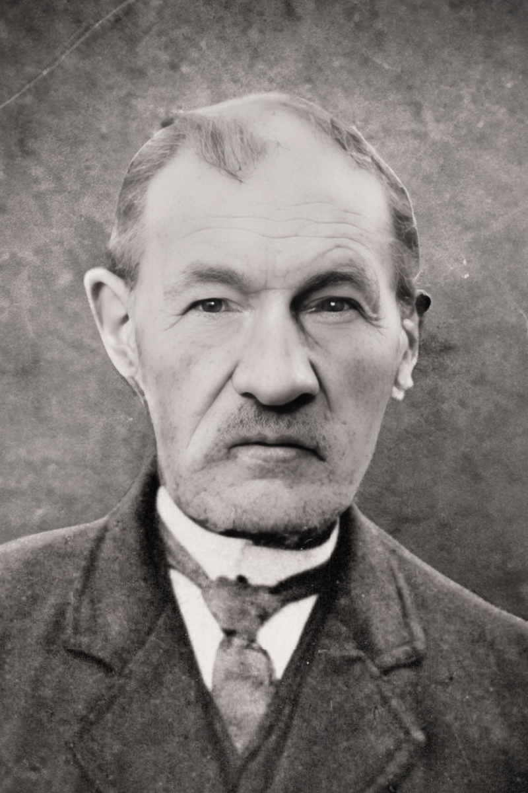
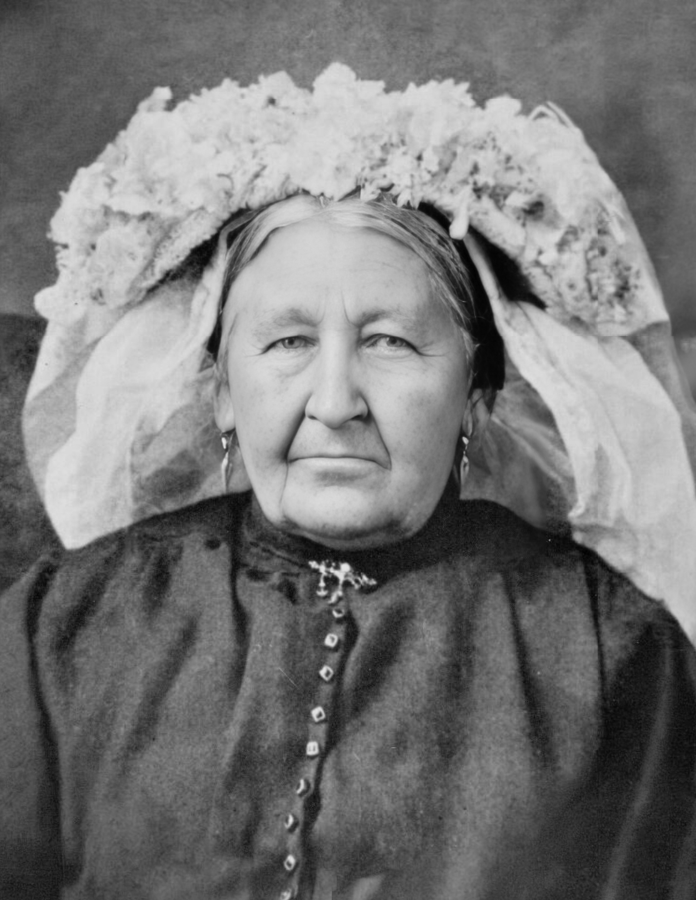

Noud van den Baar
★ Lieshout 11-07-1951 †Zijtaart 01-05-2019
Getrouwd met Maria (★ 03-03-1956)

Toon van den Baar
★ Lieshout 23-07-1919 †Lieshout 26-05-1991
Getrouwd met Corry de Hoon (★ Etten-Leur 27-07-1921†Eindhoven 13-08-1990)


Jan van den Baar
★ Strijp 13-01-1891 †Lieshout 31-01-1978
Getrouwd met Nolda Bevers (★ 09-04-1884†19-02-1980)


Driek van den Baar
Hendrikus van den Baar
★ Aalst 20-05-1857 †Lieshout 09-02-1924
Getrouwd met Antonia Verhagen (★ Son en Breugel 23-12-1855†Eindhoven 25-12-1939)


Jacobus van den Baar
★ Veldhoven 01-06-1813 †Aalst 11-03-1875
Getrouwd met Johanna Smulders (★ Strijp 18-10-1818†Gestel 21-02-1895)
Hendrik van den Baar
Hendricus van den Baar
★ Aalst 06-04-1786 †Aalst 30-04-1872
Getrouwd met Hendrina van de Ven (★ 21-01-1781†11-06-1813)
Jacobus van den Baar
★ Aalst 16-09-1754 †Aalst 03-02-1820
Getrouwd met Maria Anna Leemans (★ 1744†13-12-1819)
Joannis van den Baar
★ Vermoedelijk 25-05-1698, andere bronnen: ~ 1730 † < 1820
Getrouwd met Anna van Lieshout (★ ~ 1730† < 1820)
Joannes Laurentius van den Baar
Relatie met Joanna Bartolomeus
Laurentius Joannes van den Baar
★ 27-04-1631
Relatie met Elisabeth Jacobus
Joannes Jacobus van den Baar
Relatie met Maria Henricus